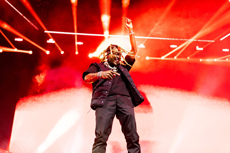

Durk, Smurk, Durkio, Smurkio, The Voice... The reason I like Durk is because he is the person I relate to the most. He has strong ties to hood in Chicago and I do have some history when it comes to New York City. He married a barbie and I have someone special in my life that I can't get enough of either. He doesn't have one flow so I never get bored nor hear the same thing over different beats. Durk raps about his life and every aspect about it and I appreciate the rawness and honesty he preaches.
